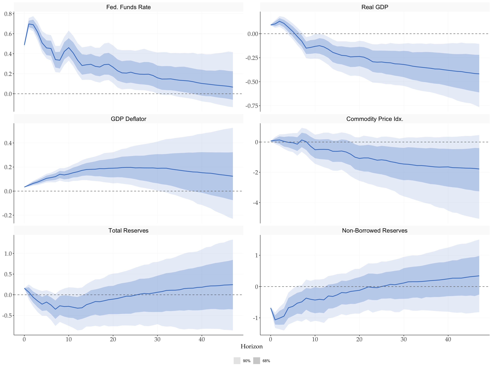

library(tidyverse)
library(tidyMacro)
theme_set(fThemeTidyMacro())
# Instrumented shocks occupy the first structural columns.
iv_shock <- 1Identification via sign restrictions and external instruments
1 Setup
2 Sign restrictions + External Instruments (IV)
The two strategies can be combined, as proposed by Cesa-Bianchi and Sokol (2022). The motivation is practical: a researcher often has a credible instrument for one shock, typically monetary policy, but nothing comparable for the others. Rather than discard the instrument or leave the remaining shocks unidentified, the instrument point-identifies its column of \(B\) and sign restrictions set-identify the rest.
Partition \(B = \begin{bmatrix} B^{IV} & B^{SR} \end{bmatrix}\). The first block is point-identified by the proxy through the usual two-stage regression (Stock and Watson 2012; Mertens and Ravn 2013): regress the first variable’s residual on the instrument, then project the remaining residuals on the fitted values to recover the ratios \(b_{i1}/b_{11}\), and rescale to shock units. The second block is set identified. The difference from plain sign restrictions is how \(Q_j\) is built: sequentially rather than by QR:
- Find the unit vector \(Q^{IV}\) that rotates the first column of \(P\) into \(B^{IV}\), i.e. \(PQ^{IV} = B^{IV}\).
- Given \(Q^{IV}\), complete the remaining columns by Gram-Schmidt on standard normal draws, so that \(Q_j = \begin{bmatrix} Q^{IV} & Q_j^{SR}\end{bmatrix}\) is orthonormal.
Then \(B_j = PQ_j\) satisfies \(\Sigma_u = B_jB_j'\) with its first column pinned at the IV estimate, and only the remaining columns are screened against the sign restrictions. The monetary policy shock is never touched by the rotation loop.
NoteWhat the scheme looks like in its original application
Cesa-Bianchi and Sokol (2022) use sign+iv to identify a financial shock, and the shape of their design is worth knowing because it is more demanding than the illustration below.
Their US block is a five-variable monthly VAR(12) over 1979m7-2016m12 in the 1-year rate, the corporate bond yield, real GDP, the CPI and the excess bond premium. Two shocks are point-identified by external instruments, the monetary policy and central bank information surprises of Jarociński and Karadi (2020), and only one further shock is set-identified by sign restrictions. A contractionary financial shock is defined as one that lowers output, prices and the policy rate while raising the credit spread and the borrowing rate; the restriction that does the identifying work is the last one, since it is the response of the borrowing rate that separates a financial shock from an ordinary demand shock. Restrictions are imposed over three months, and inference is a wild bootstrap following Mertens and Ravn (2013) rather than the Normal-inverse-Wishart posterior used here.
fSignRestr() accepts a \(k\)-column instrument and leaves \(N-k\) columns for sign restrictions. Its inference uses posterior VAR draws with an IV block estimated once.
2.1 The uncertainty the toolbox leaves out
The IV column is recovered once on the OLS point estimate. The draw loop then redraws \((\Phi, \Sigma_u)\) from the posterior at every iteration but reads \(B^{IV}\) back from that fixed value, regardless of the inference flag. The instrument’s own sampling error, the first-stage uncertainty that weak-instrument diagnostics are about, never reaches the bands.
The VAR Toolbox keeps the first-stage estimate at OLS rather than re-estimating it during posterior draws. The covariance normalization described below still changes the impact column’s length. A joint likelihood, as in Caldara and Herbst (2019) or Arias et al. (2021), is one route to modelling instrument uncertainty. Another is resampling residuals and instruments together and re-estimating the first stage, as in the Bianchi-Sokol wild bootstrap; this does not automatically provide inference robust to weak instruments. fSignRestr() follows the toolbox, so the bands on the instrumented shock should be read as conditional on the first stage.
The fixed column is renormalised against each draw’s Cholesky factor, \(b_1 / \lVert L^{-1}b_1 \rVert\), so its direction is constant but its length is not. For multiple instruments, Gram-Schmidt also changes subsequent columns’ directions when the IV-sample and VAR-draw covariances differ. Thus “fixed” means that the first stage is not re-estimated; it does not mean that every numerical entry of the impact block is unchanged. The paper’s bootstrap uses the IV-sample covariance for both recovery and completion.
2.2 Application: the Romer-Romer instrument
ACR2019 allows a version where both the data and the instrument come from published work: it is the six-variable monetary VAR of Arias et al. (2019), distributed in the replication package of Braun and Brüggemann (2023), together with the narrative monetary policy shock of Romer and Romer (2004) as the external instrument. The six endogenous variables are the same ones used on the sign and narrative pages. The local Braun-Bruggemann code (inst/Bruggemann2022) estimates a proxy-augmented likelihood model and also imposes restrictions on the inverse impact matrix. Its dataset is used here; its identification algorithm is not the fixed-IV-block rotation method illustrated below.
data(ACR2019)
# The replication code takes 100 * log of everything except the policy rate.
acr <- ACR2019 |>
mutate(across(-c(Date, `Fed. Funds Rate`, RR), \(x) 100 * log(x))) Monetary policy is pinned by the instrument; one further shock is set-identified as a contractionary demand shock, lowering output, prices and the policy rate. The remaining four are left free. That is the same shape as the design in Cesa-Bianchi and Sokol (2022): instrument for the shock you can instrument, sign restrictions for one more, silence about the rest.
# The first-stage normalization equation is the policy rate.
endo_acr <- acr |> select(`Fed. Funds Rate`, everything(), -Date, -RR)
# Column 1 of `sign_acr` is structural shock 2, the demand shock.
sign_acr <- matrix(0, nrow = 6, ncol = 5, dimnames = list(names(endo_acr), NULL))
sign_acr[c("Real GDP", "GDP Deflator", "Fed. Funds Rate"), 1] <- -1
sr_acr <- fSignRestr(
as.matrix(endo_acr),
p = 12,
c = 0,
sign = sign_acr,
store_draws = FALSE,
nsteps = 48,
ndraws = 500,
sr_hor = 6,
conf = c(68, 90),
inference = 1,
instrument = list(Z = as.matrix(ACR2019$RR)),
varnames = names(endo_acr), seed = 42
)
sr_acr
#> Sign-restricted SVAR (sign+iv)
#> Variables : Fed. Funds Rate, Real GDP, GDP Deflator, Commodity Price Idx., Total Reserves, Non-Borrowed Reserves
#> Lags : 12 Intercept: 0
#> Accepted draws : 500 of 500 slots (0 failed)
#> Rotations tried: 21,021 acceptance: 2.379%
#> Horizons : 48 bands: 68, 90%
#> Instrument : first-stage F = 93.46, R2 = 0.167, n = 468
#> IV column(s) : fixed at OLS (VAR Toolbox convention)fPlotIRFSign(
sr_acr,
shock = iv_shock,
labels = "Sign + IV (Romer-Romer)",
conf = c(68, 90),
facet_ncol = 2
)
Check instrument relevance in the normalization equation used by the model.
tibble(
instrument = "RR (Romer-Romer)",
F = sr_acr$iv$fs_F,
R2 = sr_acr$iv$fs_r2,
n = sr_acr$iv$n_iv
) |>
mutate(across(where(is.numeric), \(x) round(x, 3))) |>
gt::gt()| instrument | F | R2 | n |
|---|---|---|---|
| RR (Romer-Romer) | 93.458 | 0.167 | 468 |
The table reports relevance for the policy-rate equation used in this fit. Changing the first variable changes that diagnostic; a first-stage statistic previously computed for GDP cannot be reused for the policy-rate equation.
Because the impact column is held at its first-stage estimate, none of that weakness reaches the credible bands, for the reason set out above. These conditional credible bands are not weak-instrument-robust confidence sets.
3 Cesa-Bianchi and Sokol (2022)
Cesa-Bianchi and Sokol (2022) reports the domestic responses to an adverse US financial shock. The model is a five-variable monthly VAR(12) with a constant, estimated from 1979:M7 through 2016:M12. The endogenous variables are ordered as the one-year Treasury rate, corporate bond yield, real GDP, CPI and the excess bond premium. Monetary policy and central-bank-information shocks are jointly identified by the two high-frequency surprises of Jarociński and Karadi (2020). Conditional on those two columns, the financial shock is the first shock left for sign identification.
The financial shock lowers the policy rate, real GDP and CPI while raising the borrowing rate and the excess bond premium. These signs hold on impact and for the following two months. The remaining demand and supply shocks are unrestricted.
For the supplied US data at the OLS estimate, the impact signs have no nonzero direction in the complement of the two IV columns. More rotations of that fixed model cannot help. The all-rotation C++ collector now checks for a well-conditioned linear certificate of this incompatibility in small free subspaces, returning infeasible = TRUE, n_tried = 0 and the excluded rotation budget in n_ruled_out. Every bootstrap VAR must be checked separately: this OLS finding is not a claim that the entire bootstrap has no admissible models.
3.1 Replication code
data("CBS2022", package = "tidyMacro")
us <- CBS2022 |>
dplyr::filter(Date >= as.Date("1979-07-01"), Date <= as.Date("2016-12-01"))
y <- us |>
select(i_1YR, BondYield, lnRGDP, CPI, EBP)
z <- us |>
select(MPshockSign, CBIshockSign)
# Shocks 1 and 2 are identified by the instruments. Column 1 identifies
# shock 3, the adverse financial shock; demand and supply remain unrestricted.
sign_financial <- matrix(0, nrow = 5, ncol = 3)
sign_financial[, 1] <- c(-1, 1, -1, -1, 1)
bs_us <- fSignRestr(
y = y,
p = 12,
c = 1,
sign = sign_financial,
instrument = list(Z = z),
nsteps = 36,
ndraws = 2000,
sr_hor = 3,
sr_rot = 10000,
conf = c(68, 90),
store_draws = FALSE,
varnames = c("1-year rate", "Bond yield", "Real GDP", "CPI", "EBP"),
seed = 2022
)
fPlotIRFSign(
bs_us,
shock = 3,
labels = "Financial shock",
conf = c(68, 90),
scale = 100,
facet_ncol = 3
)4 References
Arias, Jonas E., Dario Caldara, and Juan F. Rubio-Ramírez. 2019. “The Systematic Component of Monetary Policy in SVARs: An Agnostic Identification Procedure.” Journal of Monetary Economics 101: 1–13. https://doi.org/10.1016/j.jmoneco.2018.07.011.
Arias, Jonas E., Juan F. Rubio-Ramírez, and Daniel F. Waggoner. 2021. “Inference in Bayesian Proxy-SVARs.” Journal of Econometrics 225 (1): 88–106.
Braun, Robin, and Ralf Brüggemann. 2023. “Identification of SVAR Models by Combining Sign Restrictions with External Instruments.” Journal of Business & Economic Statistics 41 (4): 1077–89. https://doi.org/10.1080/07350015.2022.2104857.
Caldara, Dario, and Edward Herbst. 2019. “Monetary Policy, Real Activity, and Credit Spreads: Evidence from Bayesian Proxy SVARs.” American Economic Journal: Macroeconomics 11 (1): 157–92.
Cesa-Bianchi, Ambrogio, and Andrej Sokol. 2022. “Financial Shocks, Credit Spreads, and the International Credit Channel.” Journal of International Economics 135: 103543. https://doi.org/10.1016/j.jinteco.2021.103543.
Jarociński, Marek, and Peter Karadi. 2020. “Deconstructing Monetary Policy Surprises: The Role of Information Shocks.” American Economic Journal: Macroeconomics 12 (2): 1–43. https://doi.org/10.1257/mac.20180090.
Mertens, Karel, and Morten O. Ravn. 2013. “The Dynamic Effects of Personal and Corporate Income Tax Changes in the United States.” American Economic Review 103 (4): 1212–47.
Romer, Christina D., and David H. Romer. 2004. “A New Measure of Monetary Shocks: Derivation and Implications.” American Economic Review 94 (4): 1055–84. https://doi.org/10.1257/0002828042002651.
Stock, James H., and Mark W. Watson. 2012. “Disentangling the Channels of the 2007-09 Recession.” Brookings Papers on Economic Activity 43 (1): 81–135.